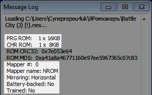
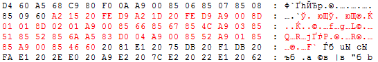

Содержание
Этот режим отображает байты из файла ROM'а как в любом другом Hex-редакторе (за некоторым исключением). Размер окна варьируется от размера ROM'а и наличия CHR.
В статьях адреса из ROM File будут записаны пятью символами и с префиксом 0x, чтобы отличать их от адресов NES Memory.
Самая первая строчка является хедером, которая содержит информацию для эмулятора, чтобы тот знал как именно эмулировать данный файл. Расшифровку байтов хедера можно посмотреть в эмуляторе через Help -> Message Log.

При попытке изменить байт в хедере, эмулятор не позволит тебе это сделать и предложит воспользоваться окном iNES Header Editor (вкладка Debug в эмуляторе FCEUX).
Если вставить в хедер байты из буфера обмена, сообщение с предложением будет выскакивать столько раз, сколько байтов хереда ты в итоге попытался ими изменить.
Если не знаешь что делаешь, не стоит редактировать байты хедера. Хедер нужно редактировать при изменении маппера и расширении ROM'а.
Далее идут байты памяти PRG ROM, начиная с 0x00010. Размер PRG определяется хедером.
С учтетом размера PRG, после него идут байты CHR ROM. Если в игре нету CHR ROM, значит она использует CHR RAM, и последние 8 KB в окне будут дублировать диапазон $0000-$1FFF из PPU Memory, изменение которых будет также изменять и байты PPU Memory.
CHR RAM вкратце означает, что байты для тайлов, которые находятся в PRG и скорее всего хранятся в сжатом формате, будут вручную записаны в видеопамять после распаковки. В этом есть свои преимущества и недостатки.
Ручное изменение байтов в ROM File подсвечивается красным цветом.

Подсветку можно использовать в личных целях, например чтобы отметить начало и конец некого участка с байтами. Кликни на байт, затем нажми Ctrl + C и Ctrl + V.
Изменения байтов отменяются через Ctrl + Z (или во вкладке Edit). Комбинацию можно удерживать чтоб отменить изменения быстрее. При нажатии комбинации Hex Editor перемещает тебя в ROM File к месту отмены изменения, если это место вне видимости или если включен другой режим во вкладке View, и произойдет отмена одного изменения.
Такой "телепорт" к месту отмены изменения можно использовать в качестве закладки для быстрого перехода к тому месту, где ты редактируешь байты, например когда тебе нужно посмотреть на адреса RAM. Скопируй любой байт поблизости и вставь его по тому же месту. Лучше несколько раз для страховки, просто кликай по байту и жми Ctrl + V.
Если открыть другой ROM без предварительного сохранения изменений, красная подсветка байтов останется, однако байты превратятся в байты текущего ROM'а. Твои проделанные изменения потеряются и не будут влиять на эту игру.
При работе с окном Code/Data Logger (вкладка Debug в эмуляторе FCEUX), байты, которые были каким-либо образом использованы в игре, будут иметь цветную подсветку. Остальные байты останутся черного цвета.
Поскольку содержимое ROM File обновляется только при взаимодействии пользователя с окном Hex Editor, для отслеживания обновления подсветки нужно, например, кликать на байты или нажимать стрелки на клавиатуре.
Подробнее узнаешь в разделе с окном Code/Data Logger.